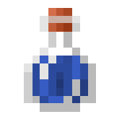

Pociones
En Minecraft, las pociones son objetos consumibles que otorgan efectos temporales al jugador o a otros mobs. Estos efectos pueden ser positivos (como fuerza o velocidad) o negativos (como veneno o lentitud), y se obtienen a través del proceso de fabricación con un soporte de pociones.
Características principales:
- Se elaboran con ingredientes específicos, como verrugas del Nether, ojos de araña, lágrimas de ghast, entre otros.
- Se utilizan frascos de vidrio llenos de agua como base.
- Pueden tener variaciones: arrojadizas, persistentes o con duración/potencia mejorada.
- Son clave en el combate, exploración y supervivencia avanzada dentro del juego.
Pociones base/intermedias
Poción Rara (Awkward Potion)
Ingredientes: Frasco de agua + Verruga del Nether.
Uso: Base para la mayoría de pociones con efectos.
Obtención: Verruga del Nether se encuentra en fortalezas del Nether.
Poción Mundana (Mundane Potion)
Ingredientes: Frasco de agua + varios ingredientes no estándar (como ojo de araña).
Uso: Sin efectos. No se usa como base para otras pociones.
Obtención: Mezclando ingredientes inadecuados en un soporte de pociones.
Poción Gruesa (Thick Potion)
Ingredientes: Frasco de agua + polvo de piedra brillante.
Uso: Sin efectos. No se utiliza para elaborar otras pociones.
Obtención: Mezclando glowstone con frasco de agua.
Pociones con efectos positivos
Poción de Regeneración
Ingredientes: Poción Rara + Lágrima de Ghast.
Uso: Regenera salud con el tiempo.
Obtención: Ghasts en el Nether.
Poción de Curación Instantánea (Healing)
Ingredientes: Poción Rara + Melón Reluciente.
Uso: Cura vida instantáneamente.
Obtención: Melón + pepitas de oro.
Poción de Visión Nocturna (Night Vision)
Ingredientes: Poción Rara + Zanahoria Dorada.
Uso: Permite ver en la oscuridad.
Obtención: Zanahoria + pepitas de oro.
Poción de Resistencia al Fuego (Fire Resistance)
Ingredientes: Poción Rara + Crema de Magma.
Uso: Inmunidad al daño por fuego y lava.
Obtención: Bola de slime + polvo de blaze.
Poción de Velocidad (Swiftness)
Ingredientes: Poción Rara + Azúcar.
Uso: Aumenta la velocidad de movimiento.
Obtención: Azúcar de caña de azúcar.
Poción de Fuerza (Strength)
Ingredientes: Poción Rara + Polvo de Blaze.
Uso: Aumenta el daño de ataque.
Obtención: Varillas de Blaze.
Poción de Salto (Leaping)
Ingredientes: Poción Rara + Pata de Conejo.
Uso: Permite saltar más alto.
Obtención: Rara al matar conejos.
Poción de Respiración Acuática (Water Breathing)
Ingredientes: Poción Rara + Pez Globo.
Uso: Permite respirar bajo el agua.
Obtención: Pesca o matar peces globo.
Poción de Caída Lenta (Slow Falling)
Ingredientes: Poción Rara + Membrana de Phantom.
Uso: Reduce daño por caída.
Obtención: Matar phantoms.
Poción de Invisibilidad (Invisibility)
Ingredientes: Poción de visión nocturna + Ojo de araña fermentado.
Uso: Vuelve al jugador invisible.
Obtención: Ojo de araña + azúcar + champiñón marrón.
Pociones con efectos negativos
Poción de Veneno (Poison)
Ingredientes: Poción Rara + Ojo de Araña.
Uso: Inflige daño con el tiempo.
Obtención: Arañas.
Poción de Debilidad (Weakness)
Ingredientes: Frasco de agua + Ojo de Araña Fermentado.
Uso: Reduce el daño de ataque.
Obtención: Sin usar Poción Rara.
Poción de Lentitud (Slowness)
Ingredientes: Poción de velocidad + Ojo de Araña Fermentado.
Uso: Disminuye la velocidad.
Obtención: Transformación mediante ingredientes negativos.
Poción de Daño Instantáneo (Harming)
Ingredientes: Poción de curación o veneno + Ojo de Araña Fermentado.
Uso: Inflige daño inmediato.
Obtención: Por fermentación.
Pociones especiales (1.21 Trial Chambers)
Poción de Exudación (Oozing)
Ingredientes: Exclusiva de las Trial Chambers.
Uso: Aplica el efecto de exudación.
Obtención: Trial Chambers.
Poción de Infestación (Infestation)
Ingredientes: Exclusiva de las Trial Chambers.
Uso: Efecto único de infestación.
Obtención: Trial Chambers.
Poción de Tejido (Weaving)
Ingredientes: Exclusiva de las Trial Chambers.
Uso: Aún no detallado oficialmente.
Obtención: Trial Chambers.
Poción de Carga de Viento (Wind Charging)
Ingredientes: Exclusiva de las Trial Chambers.
Uso: Mejora habilidades de carga de viento.
Obtención: Trial Chambers.
Poción del Maestro Tortuga (Turtle Master)
Ingredientes: Poción Rara + Caparazón de Tortuga.
Uso: Aumenta la resistencia, pero reduce velocidad.
Obtención: Caparazones al criar tortugas.
Variaciones
La mayoría de las pociones se pueden convertir en:
- Pociones Arrojadizas (Splash Potions): Añadiendo pólvora.
- Pociones Persistentes (Lingering Potions): Añadiendo aliento de dragón.
- Versión extendida: Añadiendo redstone para mayor duración.
- Versión potenciada: Añadiendo piedra luminosa (glowstone) para aumentar el nivel del efecto.